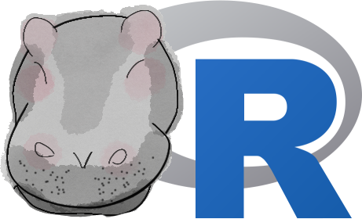

| Branch |  |
 |
|
|---|---|---|---|
master |
 |
 |
|
develop |
 |
 |
beastier is an R package to run BEAST2.

beastier is part of the babette package suite:
-
beautiercreates BEAST2 input (.xml) files. -
beastierruns BEAST2 -
mauricer: install BEAST2 packages -
tracererpastes BEAST2 output (.log,.trees, etc) files.
Related R packages:
-
beastierinstall: Install and uninstall BEAST2 -
beastier_on_windows: Verify thatbeastierworks on the Windows operating system -
lumier: Shiny app to help create the function call needed
Install BEAST2
Due to CRAN policy, beastier cannot install BEAST2. As a workaround, the non-CRAN beastierinstall can be used.
To install BEAST2:
remotes::install_github("richelbilderbeek/beastierinstall")
beastierinstall::install_beast2()
Example for v2.1
Run BEAST2:
output_state_filename <- "out.state"
run_beast2(
input_filename = get_beastier_path("2_4.xml"),
output_state_filename = output_state_filename
)This will create the files as specified in the 2_4.xml BEAST2 input file.
Example for v2.0.25
output_log_filename <- "out.log"
output_trees_filename <- "out.trees"
output_state_filename <- "out.state"
run_beast2(
input_filename = get_beastier_path("2_4.xml"),
output_log_filename = output_log_filename,
output_trees_filenames = output_trees_filename,
output_state_filename = output_state_filename
)Note that in this version, the filenames for the .log and .trees files could be specified. This is unneeded: the 2_4.xml BEAST2 input file specifies where these files will be stored:
<?xml [...]?><beast [...]>
[...]
<run [...]>
[...]
<logger id="tracelog" fileName="test_output_0.log" [...]>
[...]
</logger>
[...]
<logger id="treelog.t:[...]" fileName="$(tree).trees" [...]>
[...]
</logger>
</run>
</beast>When using beautier, this can be specified in create_mcmc:
create_mcmc(
tracelog = create_tracelog(
filename = "my_trace.log"
),
treeslog = create_treeslog(
filename = "my_trees.trees"
)
)Missing features/unsupported
beastier cannot do everything BEAST2 can.
- Remove: install BEAST2, use
beastierinstall - Experimental: Continue a BEAST2 run
- Untested: Setup BEAGLE
There is a feature I miss
See CONTRIBUTING, at Submitting use cases
I want to collaborate
See CONTRIBUTING, at ‘Submitting code’
I think I have found a bug
See CONTRIBUTING, at ‘Submitting bugs’
Dependencies
| Branch | |
|
|---|---|---|
beautier master
|
 |
|
beautier develop
|
 |
|
beastierinstall master
|
 |
|
beastierinstall develop
|
 |
| Branch | |
|---|---|
beastier_on_windows master
|
|
beastier_on_windows develop
|
References
Article about babette:
- Bilderbeek, Richèl JC, and Rampal S. Etienne. “
babette: BEAUti 2, BEAST 2 and Tracer for R.” Methods in Ecology and Evolution (2018). https://doi.org/10.1111/2041-210X.13032
FASTA files anthus_aco.fas and anthus_nd2.fas from:
- Van Els, Paul, and Heraldo V. Norambuena. “A revision of species limits in Neotropical pipits Anthus based on multilocus genetic and vocal data.” Ibis.